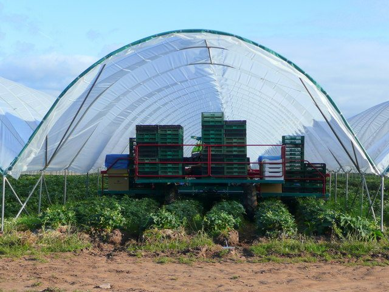
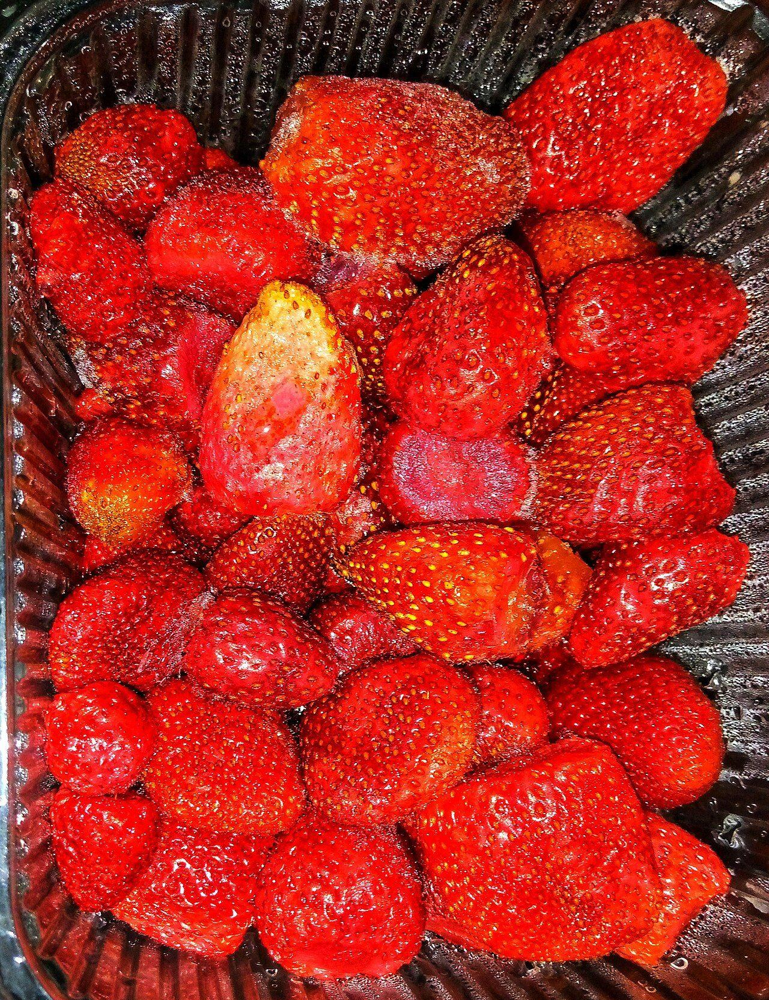
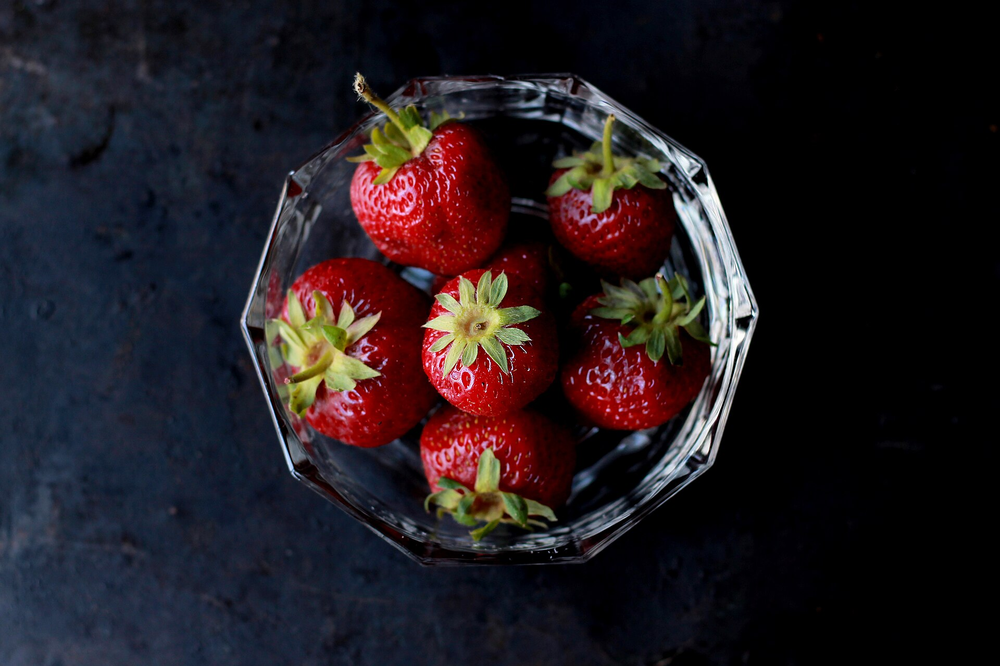

Japanese strawberries are premium because they are labour-intensive: largely greenhouse-grown, tended and picked by hand at peak ripeness, then carefully graded and packed. Flavour-first breeding and Japan's culture of fruit as a gift complete the picture.
Anyone who has seen the price of a perfect box of Japanese strawberries has probably wondered why they cost so much. The answer is not marketing — it is the enormous amount of care that goes into growing, selecting and handling each berry. Here is what sits behind the premium.
Labour-intensive, hand cultivation
Premium Japanese strawberries are grown with a level of attention closer to gardening than mass farming. They are largely raised in climate-controlled greenhouses, where growers manage temperature and conditions through the cool season. Plants are tended by hand — pruned, supported and nurtured — and the fruit is picked by hand at peak ripeness rather than harvested early for shipping. All of that human effort adds up.

Careful grading and selection
Not every berry makes the top grade. After picking, strawberries are sorted and graded by size, shape, colour and uniformity, and only the finest are set aside as premium. Because the berries are soft and bruise easily, they are then packed with great care — often cushioned and arranged so they arrive unblemished. This meticulous sorting and packing is a big part of the cost, and a big part of why premium boxes look so flawless.

Bred for flavour, not durability
Where many strawberries are bred to travel well, Japanese breeding programs — often run by prefectural research stations — chase eating quality first: a fuller sweetness, gentle acidity, tender flesh and fragrant aroma. Growing through the cool season helps, too, because slow ripening lets the fruit build sweetness. The result is berries that taste distinctly rich and aromatic, as we explore in our guide to Japanese strawberry varieties.
Japan's fruit-gifting culture
In Japan, beautiful fruit is more than a snack — it is a gift. There is a long tradition of presenting carefully chosen, flawless fruit to show respect and appreciation, including during seasonal gift-giving customs. Perfect strawberries are treasured for this, and specialty fruit shops elevate them to something like a luxury good. That culture sustains a market for the very best berries and reinforces the standards growers aim for.

Freshness and delicacy
Finally, strawberries are perishable and delicate. Picking them ripe means they must be handled gently and moved quickly to reach you at their best, which calls for careful cold-chain logistics. That fragility is inseparable from the flavour — and it is why knowing how to store strawberries and buying them in season matters so much.
So, are they worth it?
For many people, absolutely. What you are paying for is not just a fruit but the hand cultivation, the selection, the breeding and the care that deliver a berry at its peak — sweet, fragrant, tender and beautiful. Enjoyed at the right moment, a premium Japanese strawberry is a small luxury that lives up to its reputation.
Frequently asked questions
Why are Japanese strawberries so expensive?
They are labour-intensive to grow. They are largely raised in climate-controlled greenhouses, tended and picked by hand at peak ripeness, and then carefully graded and packed to avoid bruising. Combined with flavour-first breeding and Japan's culture of fruit as a gift, this care is reflected in the price.
Are expensive Japanese strawberries worth it?
For many people, yes. The appeal is in the eating quality — a full, balanced sweetness, fragrant aroma, tender texture and beautiful appearance. Premium berries are picked ripe and handled gently, which is exactly what makes them special.
Why is fruit given as a gift in Japan?
Japan has a long tradition of giving carefully chosen fruit as a gift to show respect and appreciation, including during seasonal gift-giving customs. Flawless, beautiful fruit like premium strawberries is especially prized for this purpose, which supports a market for the very best.
What makes premium strawberries taste better?
Flavour-focused breeding, cool-season growing that lets fruit ripen slowly, and picking at peak ripeness all contribute. Because the best berries are handled gently and delivered fresh, more of their natural sweetness and aroma reaches you.
Experience premium Japanese strawberries
Reserve a box and taste the care in every berry.
Shop & Reserve →